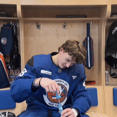

Category:Sons of Schaefer
| ArticleTalk | ReadEditView history |
From Wikipedia, the free encyclopedia
This category contains goaltenders who might have had one more win in that column Vezina voters love so much... if not for Matthew Schaefer.
Loading...
Category:Brothers of Schaefer
| ArticleTalk | ReadEditView history |
From Wikipedia, the free encyclopedia
This category contains New York Islanders brothers-in-arms who have scored a goal assisted by Matthew Schaefer.
Loading...